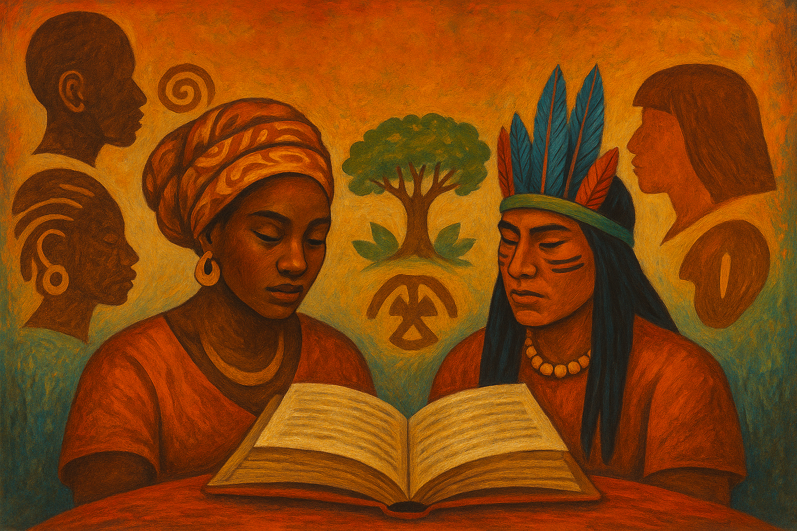

Sequência didática: Vozes da Resistência – Literatura Afro-brasileira e Indígena - Atividade 1º ano
A proposta desta sequência didática tem como foco o trabalho com a literatura afro-brasileira e indígena, valorizando autores que representam vozes historicamente silenciadas. A atividade visa proporcionar aos estudantes uma experiência literária rica, promovendo o reconhecimento da diversidade cultural brasileira e o respeito às múltiplas identidades presentes em nossa sociedade.
O objetivo central é desenvolver o letramento étnico-racial por meio da leitura de poemas, contos, depoimentos e músicas de autores como Conceição Evaristo, Eliane Potiguara, Daniel Munduruku e Cuti. Além disso, busca-se estimular a reflexão crítica sobre temas como ancestralidade, resistência, identidade e oralidade, articulando a literatura à vivência dos estudantes e culminando em uma produção artística coletiva, como um sarau ou uma exposição temática.
Etapas da Sequência Didática
Aula 1 – Acolhida e sensibilização: Quem são as vozes da resistência?
Nesta primeira aula, o objetivo é sensibilizar os alunos para o tema da diversidade cultural e das vozes marginalizadas. Inicie com a exibição de vídeos curtos ou trechos de apresentações de slam, poemas falados, canções de artistas como Sérgio Vaz, Elza Soares ou Djuena Tikuna, para provocar reflexões. Em seguida, proponha uma roda de conversa com perguntas norteadoras como:
- Quais vozes costumamos ouvir na mídia e na escola?
- Você conhece escritores indígenas ou negros?
- O que é resistência na cultura?
Registre as ideias no quadro e estimule os alunos a expressarem livremente suas percepções. Finalize com a proposta da sequência: estudar textos literários afro-brasileiros e indígenas para conhecer outras formas de narrar o mundo.
Aula 2 – Leitura literária: Vozes indígenas e afro-brasileiras na literatura
Nesta aula, trabalhe com a leitura coletiva de trechos selecionados de autores como Daniel Munduruku, Cuti e Conceição Evaristo. Distribua os textos (em papel ou digital) e leia com os alunos, realizando pausas para discussão e interpretação.
Sugestão de textos:
- “O espírito da floresta” (Munduruku)
- Poemas de Negroesia (Cuti)
- Excerto de “Olhos d’água” (Evaristo)
Encoraje os alunos a marcar trechos que mais os tocaram. Após a leitura, proponha uma atividade escrita: cada aluno deve registrar, em seu caderno ou diário de leitura, uma frase ou ideia marcante, justificando a escolha. Encerre com a pergunta: “Que ancestralidades estão presentes nessas vozes?”
Aula 3 – Estudo e aprofundamento: Conceitos e contextos
Esta aula será voltada ao estudo dos conceitos centrais da sequência: escrevivência, oralidade indígena, resistência e identidade cultural. Inicie com a definição do termo “escrevivência”, criado por Conceição Evaristo, e discuta o significado de “escrever com o corpo e a memória”. Depois, apresente a importância da oralidade na cultura indígena com exemplos de narrativas tradicionais ou depoimentos de líderes indígenas.
Divida a turma em grupos e peça que cada um elabore um cartaz (ou mapa conceitual digital) representando visualmente um dos conceitos, relacionando-o com os textos lidos. Essa produção poderá compor a exposição final.
Aula 4 – Escrita criativa: Minha ancestralidade, minha voz
Agora é o momento de os alunos se tornarem autores. Comece com uma breve retomada dos textos e conceitos já discutidos. Em seguida, proponha que os estudantes escrevam textos autorais (poemas, minicontos, relatos ou depoimentos) abordando temas como:
- Memórias de família
- Território
- Tradições culturais
- Preconceito
- Resistência cotidiana ou identidade racial e étnica
Aula 5 – Revisão e preparação para o sarau ou exposição
Destaque a importância de revisar os textos antes da apresentação final. Nesta aula, os alunos devem revisar seus próprios textos, com apoio do professor e dos colegas. Proponha uma oficina de reescrita, com foco em aspectos como coesão, clareza e expressividade. Após a revisão, os estudantes poderão digitar ou escrever com capricho suas versões finais, que serão expostas ou apresentadas.
Aproveite para organizar a divisão de tarefas para o evento final:
- Quem vai apresentar?
- Quem ficará responsável por decoração?
- Haverá música ou trilha sonora?
Aula 6 – Culminância: Sarau literário ou exposição das vozes da resistência
Esta é a aula de culminância do projeto. Organize a sala ou outro espaço da escola como um ambiente de celebração cultural. Os textos produzidos podem ser lidos no sarau (com microfone, se possível) ou expostos em painéis e varais literários. Incentive que os alunos apresentem suas produções com orgulho e emoção, valorizando sua voz. É possível incluir música, danças ou leituras dramáticas.
Convide outras turmas, professores e até famílias para prestigiar. Ao final, conduza uma breve roda de conversa sobre como a literatura pode ser ferramenta de luta, memória e transformação social.
Avaliação
- Participação nas discussões
- Qualidade reflexiva e criativa da produção textual
- Apropriação dos conceitos estudados (escrevivência, resistência, identidade)
- Expressividade e empatia durante o sarau